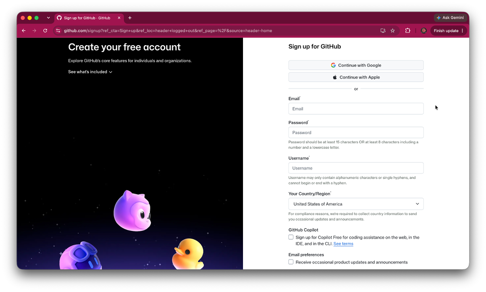
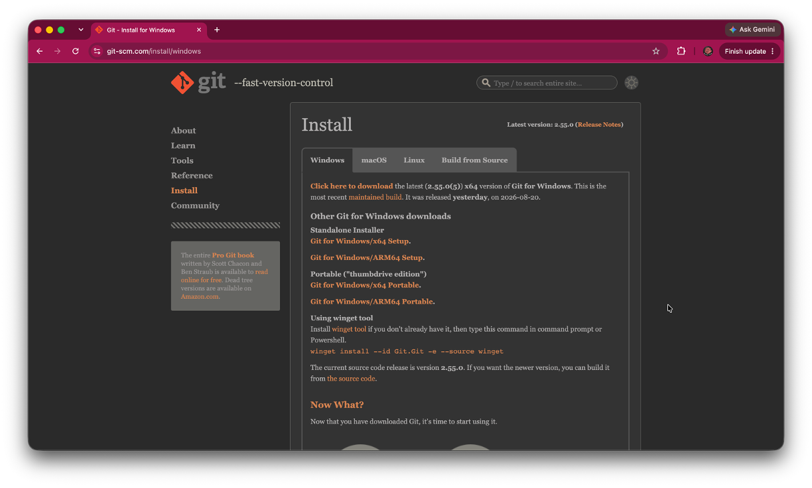
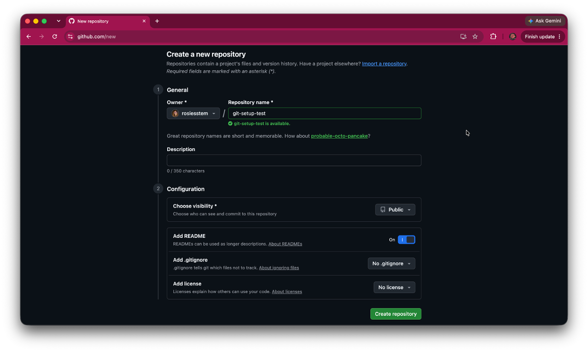
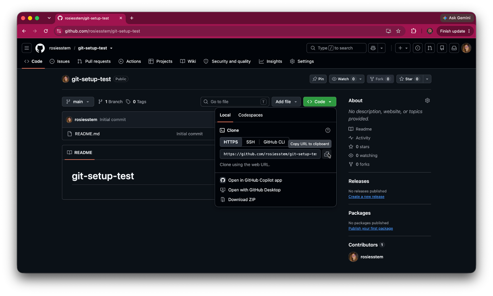
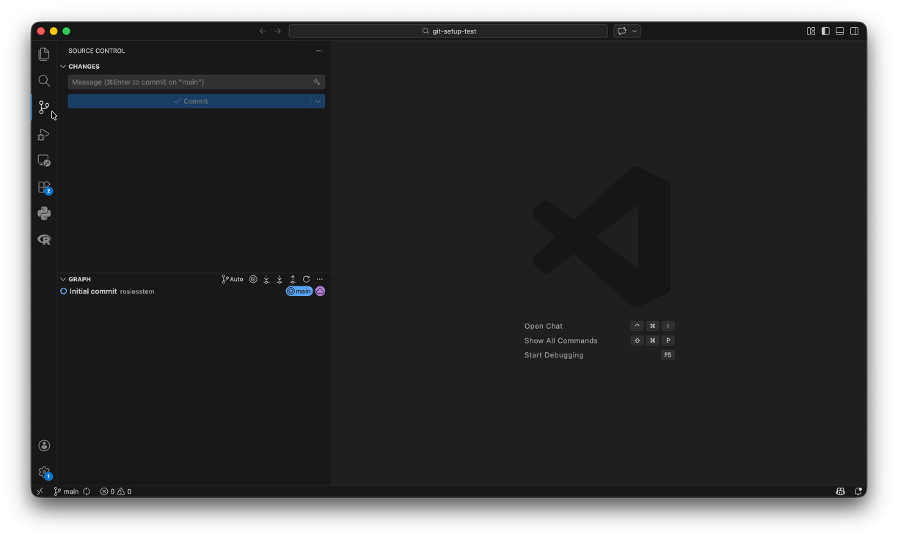

Git & GitHub Installation & Setup Guide
Install Git, create a GitHub account, and connect the tools you use
Git & GitHub Installation & Setup Guide
Install Git, create a GitHub account, and connect the tools you use
Before You Begin
Git and GitHub are tools for keeping track of changes to your work and collaborating with others.
Although they are often used together, Git and GitHub are not the same thing.
This guide is for you if you:
- are installing Git for the first time
- need to create a GitHub account
- want to configure your name and email in Git
- want to connect Git on your computer to GitHub
- want to use Git through VS Code or
- are unsure whether Git, GitHub, and VS Code are configured correctly.
By the end of this guide, you will be able to:
- explain the difference between Git and GitHub
- create and configure a GitHub account
- install Git
- verify that Git is available from the command line
- configure your Git name and email
- authenticate with GitHub
- verify that VS Code recognizes Git and
- identify several common setup problems.
Before you start
You do not need to know how to use Git yet. This guide focuses on getting everything installed and connected.
What Are Git and GitHub?
Before we talk about Git and GitHub, it helps to understand a few important ideas: version control, a repository, and the difference between local and remote repositories.
What Is Version Control?
Imagine you are writing a paper or working on a programming assignment.
Without version control, your files might look something like this:
paper.docx
paper-final.docx
paper-final-final.docx
paper-final-v2.docx
paper-final-really-final.docxIt quickly becomes difficult to remember:
- which version is the newest,
- what changed,
- or how to return to an earlier version if something goes wrong.
Version control is a system for recording changes to files over time.
Rather than creating many copies of the same project, version control keeps a history of changes so you can:
- see what changed,
- return to an earlier version,
- experiment without permanently losing your work, and
- collaborate with other people more easily.
What Is a Repository?
A repository (often shortened to repo) is a project that Git tracks.
A repository contains:
- your project files,
- the history of changes made to those files, and
- information Git uses to manage the project.
You can think of a repository as a project folder that Git is watching.
Local vs. Remote Repositories
Repositories can exist in more than one place.
A local repository lives on your computer. This is the copy you edit while working on a project.
A remote repository is stored somewhere else, such as GitHub. Remote repositories make it possible to back up your work, share projects with others, and collaborate across multiple computers.
Many projects have both:
- a local repository on your computer, and
- a remote repository on GitHub.
Changes made to one copy do not automatically appear in the other. Git provides commands that allow you to synchronize the two when you are ready.
Git vs. GitHub
Now that we understand those ideas, we can distinguish Git and GitHub.
Git is a version control system. It runs on your computer and tracks changes to the files in a local repository.
GitHub is an online service that stores remote Git repositories, making it easier to back up your work, share projects, and collaborate with others.
A simple mental model is:
Mental Model
Git manages the local repository on your computer by tracking changes to your project.
GitHub stores a remote repository, providing an online copy of your project that you can use for backup, sharing, and collaboration.
Many projects use both a local repository and a remote repository. Git provides the tools that allow you to synchronize changes between them when you are ready.
This distinction is useful when troubleshooting.
If something goes wrong, ask yourself:
Is the problem with my local repository, my remote repository on GitHub, or the connection between them?
Create a GitHub Account
If you already have a GitHub account that you plan to use, you can skip this section.
Go to:
https://github.com/
Choose Sign up and follow the instructions to create an account.

Choose Your Username Carefully
Your GitHub username identifies your account and may appear publicly in:
- your GitHub profile
- repository URLs
- links you share
- collaborative projects
Choose a username that you are comfortable using for school, research, or professional work.
Best Practice
You do not need to use your full legal name as your GitHub username, but choose something you would be comfortable sharing with an instructor, classmate, collaborator, or future employer.
Verify Your Email Address
Complete GitHub’s email verification process after creating your account.
You will also want GitHub to recognize the email address you use later for your Git commits.
Why does the email matter?
Git records an author name and email address with each commit.
GitHub uses the commit email address to associate commits with your GitHub account. This is useful when multiple people are collaborating on a project.
We will configure this later in the guide.
Install Git
Git needs to be installed on your computer before you can use Git from the command line or through tools such as VS Code.
The installation process differs slightly by operating system.
Windows
Go to the official Git website:
https://git-scm.com/install/windows
Download the current Git for Windows installer.

- Open the downloaded installer.
- Follow the installation prompts.
- For most beginning users, the default options are appropriate.
- Complete the installation.
- Close and reopen Command Prompt, PowerShell, or VS Code before verifying the installation.
Git for Windows also provides Git Bash, a terminal that supports Git and many Unix-style commands.
You may encounter Git Bash in courses, tutorials, or Git documentation. You can also use Git from PowerShell or the VS Code terminal.
macOS
Your Mac may already have access to Git through Apple’s Command Line Tools.
Open Terminal and run:
git --versionIf Git is already available, you may see a version number.
If macOS prompts you to install the Command Line Developer Tools, follow the prompts to install them.
You can also request the installation directly with:
xcode-select --installAfter installation, close and reopen Terminal.
If you already use Homebrew, you can instead install a current version of Git with:
brew install gitYou do not need to install Homebrew solely for this guide if the Apple Command Line Tools provide the Git installation you need.
Linux
Git is available through the package manager used by most Linux distributions.
Follow the installation instructions for your distribution.
For example, Debian- or Ubuntu-based systems commonly use:
sudo apt install gitAfter installation, open a new terminal before continuing.
Verify the Git Installation
Open a terminal and run:
git --versionA successful installation displays a Git version number.
For example:
git version 2.55.0Your version number may be different.
The terminal displays a Git version number without an error.
Best Practice
Verify Git from the command line before troubleshooting GitHub or VS Code.
If git --version does not work, fix the Git installation before moving on.
Configure Your Git Identity
Git records information about the author of each commit.
Before using Git, configure the name and email address you want associated with your work.
Set Your Name
Open a terminal and run:
git config --global user.name "Your Name"For example:
git config --global user.name "Ada Lovelace"Your Git user.name does not need to match your GitHub username.
Your Git name is the author name stored with your commits.
Set Your Email Address
Run:
git config --global user.email "your-email@example.com"Use an email address associated with your GitHub account if you want GitHub to connect your command line commits to your account.
If you do not want your personal email address stored in your Git commits, GitHub provides a private noreply email address that you can use instead.
You can find your GitHub email settings under:
GitHub → Settings → Emails
If you use a noreply address, configure that address in Git instead of your personal email.
Verify Your Settings
Check your name:
git config --global user.nameCheck your email:
git config --global user.emailGit displays the name and email address you configured.
Why --global?
The --global option applies these settings to Git repositories you use on this computer.
Later, if a particular project needs a different identity, Git also allows repository-specific settings.
Connect Git to GitHub
Git can work entirely on your computer.
However, if you want to clone, push, pull, or perform other operations involving a remote repository on GitHub, Git needs a secure way to verify your identity.
Authenticating with GitHub
When Git communicates with GitHub over HTTPS, there are several common ways to authenticate.
Git Credential Manager
Git Credential Manager (GCM) is a program that securely stores your GitHub credentials.
The first time Git needs to connect to GitHub, GCM typically opens your web browser, asks you to sign in to GitHub, and securely stores your credentials for future Git operations.
For most beginning users, this is the simplest authentication method because you usually only need to sign in once.
Personal Access Token (PAT)
A Personal Access Token (PAT) is a long, randomly generated string that GitHub issues in place of your GitHub account password.
If you authenticate manually over HTTPS, GitHub requires a PAT rather than your account password.
PATs are commonly used for:
- development environments
- remote servers
- automated scripts
- teaching environments
- applications that cannot use browser-based authentication
GitHub CLI
GitHub CLI (gh) is an official command-line application developed by GitHub.
GitHub CLI is not part of Git. Instead, it provides command-line access to many GitHub features, including authentication, repository management, pull requests, issues, and releases.
Many developers also use GitHub CLI to authenticate Git with GitHub through a guided sign-in process.
Which authentication method should I use?
For most beginning users, Git Credential Manager provides the simplest experience.
If your instructor specifically asks you to create a Personal Access Token (PAT), follow those instructions.
If you already use GitHub CLI, you may prefer to authenticate using:
gh auth loginAll three methods authenticate Git with GitHub over HTTPS. They differ only in how your identity is verified and how your credentials are managed.
GitHub no longer accepts your GitHub account password for Git operations over HTTPS.
Instead, Git requires a more secure authentication method, such as Git Credential Manager, a Personal Access Token (PAT), or GitHub CLI.
Test the GitHub Connection
The most reliable way to verify the connection is to perform an authenticated Git operation.
We will keep this test minimal because the Getting Started with Git & GitHub guide will explain repositories, cloning, commits, pushing, and pulling in detail.
Create a Test Repository on GitHub
Sign in to GitHub.
Create a new repository named:
git-setup-testYou can make the repository private if you prefer.

For this setup test, select the option to create the repository with a README file.
Copy the HTTPS URL
On the repository page, select Code.
Make sure HTTPS is selected.
Copy the repository URL.
It will look similar to:
https://github.com/your-username/git-setup-test.git
Clone the Repository
Open a terminal.
Navigate to a location where you are comfortable creating a test folder.
Run:
git clone https://github.com/your-username/git-setup-test.gitReplace the example URL with the URL you copied from GitHub.
The first time Git connects to GitHub, you may be prompted to authenticate.
Follow the browser or credential-manager prompts.
Git creates a new git-setup-test folder on your computer containing the README from GitHub.
What did clone do?
For now, you only need to know that cloning created a local copy of the GitHub repository on your computer.
The Getting Started with Git & GitHub guide will explain cloning and the relationship between local and remote repositories in more detail.
Git + VS Code
VS Code includes a Source Control interface that can work with Git.
There are again two separate pieces:
- Git performs version control.
- VS Code provides an interface for interacting with Git.
Installing VS Code does not install or replace Git.
Open the Test Repository
In VS Code, choose:
File → Open Folder
Open the git-setup-test folder you cloned.
Open Source Control
Select the Source Control icon in the Activity Bar.

VS Code recognizes the folder as a Git repository and displays the Source Control interface.
Mental Model
VS Code is showing you information from Git.
The Source Control panel is not a separate version control system.
Actions you perform there correspond to Git operations.
Common Problems
git: command not found or Git is not recognized
Git is either not installed or your terminal cannot find the installation.
Run:
git --versionin a new terminal.
If the command still fails:
- confirm that Git was installed
- close and reopen the terminal
- restart VS Code if it was open during installation
- reinstall Git only if the installation itself appears incomplete
Git asks for my GitHub password
Do not enter your normal GitHub account password for a Git operation.
GitHub does not support password-based authentication for Git operations over HTTPS.
Use the browser or credential-manager authentication prompt when available.
If you are using manual HTTPS authentication, GitHub requires a personal access token instead of your account password.
Git keeps asking me to sign in to GitHub
Your credentials may not be stored by a credential manager.
Check whether your Git installation is configured to use a credential manager.
GitHub recommends using a credential helper such as Git Credential Manager or authenticating through GitHub CLI for HTTPS connections.
Do not store your GitHub password or authentication token in a plain-text project file.
My commits do not appear under my GitHub account
Check the email address stored in your Git configuration.
Run:
git config --global user.emailGitHub uses the email stored with a commit to associate that commit with an account.
Make sure the displayed email is either:
- an email address added to your GitHub account or
- your GitHub-provided
noreplyemail address.
Changing the setting affects future commits, not commits that were already created.
My Git name is different from my GitHub username
That is normal.
Your Git name:
user.nameis the author name stored with commits.
Your GitHub username identifies your GitHub account.
They do not need to be the same.
VS Code does not recognize Git
First check whether Git works outside VS Code.
Open a terminal and run:
git --versionIf that fails, troubleshoot the Git installation.
If it works:
- restart VS Code
- open the project folder, not only an individual file and
- confirm that the folder you opened is actually a Git repository.
VS Code Source Control says there is no repository
You may have opened the wrong folder.
For the setup test, make sure you opened:
git-setup-testrather than the folder containing git-setup-test.
A Git repository contains a hidden .git directory that Git uses to store repository information.
Do not manually edit or delete the .git directory.
I accidentally created a Git repository inside another Git repository
This is called a nested repository and is usually not what a beginner intends.
This can happen when you run git init or git clone <> inside a folder that is already located within another Git repository.
Before initializing a new repository, check which folder you have open and where your terminal is located.
If you are unsure how to repair a nested repository, avoid deleting .git folders until you understand which repository each one belongs to.
Cloning fails with “repository not found”
Check the repository URL and whether your GitHub account has permission to access the repository.
Return to the repository on GitHub.
Select:
Code → HTTPS
and copy the URL again.
Also confirm that you are signed into the GitHub account that owns the repository or has been given access to it.
Authentication opens the wrong GitHub account
Your computer may already have credentials stored for another GitHub account.
This is especially common on shared computers or computers previously used with another GitHub account.
Check which GitHub account is signed in through your browser and which credentials are stored by your credential manager.
Do not delete credentials unless you know which account they belong to.
Something worked before, but GitHub suddenly will not connect
Determine whether Git itself still works before changing your authentication setup.
Check:
- Does
git --versionstill work? - Are you connected to the internet?
- Can you sign in to GitHub in your browser?
- Are you using the correct GitHub account?
- Does the repository still exist?
- Do you still have permission to access it?
- Is your credential manager asking you to authenticate again?
Avoid reinstalling Git until you know that the Git installation itself is the problem.
Best Practices
- Know the difference between Git and GitHub.
- Open the project folder rather than only an individual file.
- Verify Git from the terminal before troubleshooting VS Code.
- Use an email associated with your GitHub account if you want your commits attributed to your profile.
- Use GitHub’s
noreplyemail if you prefer not to expose your personal email address in commits. - Use secure credential storage rather than saving passwords or tokens in project files.
- Do not share personal access tokens, passwords, or other authentication credentials.
- Check which GitHub account you are using before changing authentication settings.
- Do not manually edit the
.gitdirectory. - Avoid reinstalling Git until you have identified which part of the workflow is actually failing.
Next Steps
Git and GitHub are now installed and connected.
Other guides will fovus on actually using version control, including:
- repositories
- the working directory
- checking repository status
- tracking files
- staging changes
- commits
- commit messages
- local and remote repositories
- cloning
- pushing
- pulling
.gitignore- branches
- merge conflicts and
- the basic Git/GitHub workflow.
You do not need to memorize Git commands before you begin.
Verify Your Setup
Git Setup
GitHub Setup
VS Code Setup